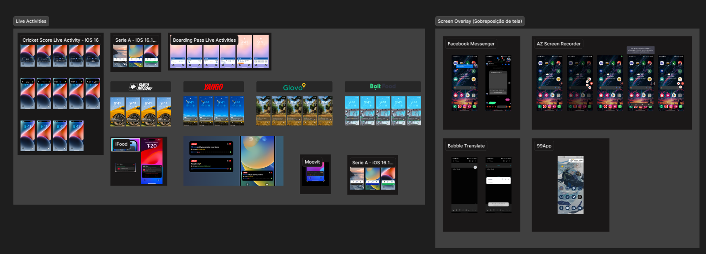
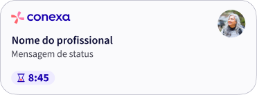
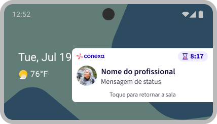
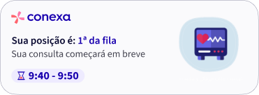
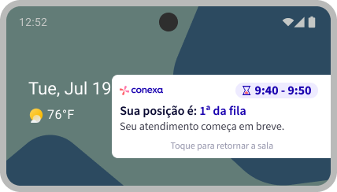
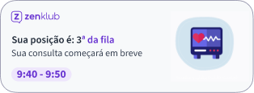

Estudo exploratório
Rich Notifications: mantendo pacientes informados além do app.
Como conduzi um benchmarking e prototipação de notificações ricas para reduzir a ansiedade da espera em consultas de telemedicina — do Live Activities do iOS às sobreposições do Android.
Contexto — o que é isso
O recurso de Rich Notifications é fundamental para manter os usuários constantemente informados sobre suas atividades correntes — como a espera por uma entrega em domicílio, a chegada de um motorista de aplicativo ou, no contexto da Conexa, o momento de ser atendido por um profissional de saúde.
Ao integrar Rich Notifications, o objetivo era proporcionar uma comunicação mais efetiva e um acompanhamento mais preciso de consultas e sessões, melhorando a gestão de tempo e a satisfação do usuário — mesmo quando ele não está com o app aberto.
Objetivos
- Manter o usuário continuamente informado sobre sua consulta, mesmo quando não está ativo no aplicativo.
- Informar o usuário sobre o momento exato em que o profissional de saúde está pronto para atendê-lo.
- Melhorar a experiência do usuário por meio de um mecanismo de comunicação eficaz.
- Garantir uma gestão mais eficiente do tempo de espera dos profissionais de saúde e dos pacientes.
Benchmarking
Conduzi um benchmarking aprofundado, começando pela implementação do Live Activities da Apple, adaptando essa solução para iPhones e iPads. Para o Android, explorei a técnica de sobreposição de tela em celulares e tablets.
Analisei aplicativos como 99, Uber e iFood, além de apps de acompanhamento de voos e eventos esportivos, examinando como cada um apresenta informações dinâmicas: o posicionamento na interface, o uso de animações para indicar progresso, e os métodos para sinalizar conclusão de uma ação.

Insights
- Aprimoramento da experiência do usuário: notificações devem ser personalizadas com informações relevantes e ações diretas; elementos visuais dinâmicos ajudam a capturar atenção.
- Interatividade e acessibilidade: no Android, o texto precisa deixar claro que tocar na sobreposição redireciona de volta à sala de espera — acessibilidade como prioridade em toda a interação.
- Atualizações em tempo real: sincronização com os servidores do app é crucial para dados sempre atualizados.
- Teste e iteração constantes: testes A/B para entender o que aumenta engajamento, com coleta de feedback direto dos usuários.
Ideação
Desenhei o Rich Notification como complemento à sala de espera, para dois cenários:
Consultas agendadas
Mensagens de status da consulta, um timer de 10 minutos iniciado automaticamente antes do horário, e nome e foto do profissional que vai atender — criando um ambiente mais pessoal e acolhedor.


Consultas imediatas
Posição do usuário na fila de atendimento, mensagens de status, e horário estimado de chamada.


Próximos passos
Este estudo não chegou a ser implementado em produção. Os próximos passos definidos foram a condução de testes A/B, em parceria com a Zenklub, para validar as variações antes de um eventual lançamento.

Além das notificações
Como extensão da mesma necessidade — manter o usuário sempre atualizado — mapeei a ideia de um widget para notificações, confirmações e lembretes de consultas, buscando inspiração em widgets de e-mail, calendário, previsão do tempo e no Duolingo.
Aprendizados
- Benchmarking em categorias adjacentes (delivery, mobilidade, esportes) revela padrões de comunicação em tempo real aplicáveis a saúde.
- Acessibilidade em notificações exige atenção redobrada em interações que dependem de toque/sobreposição, especialmente no Android.
- Nem todo estudo precisa chegar à produção para gerar valor — o processo de benchmarking e prototipação já orienta decisões futuras do time.